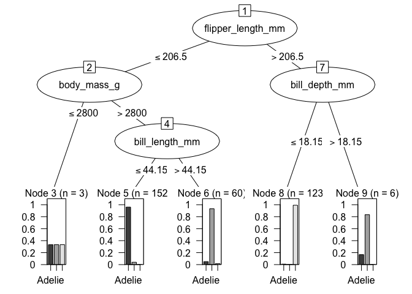

The goal of lorax is to help look at different aspects of tree- and rule-based models.
lorax supports a few APIs:
-
as.party()converts trees to the format used bypartykit::ctree(), mostly because it has an amazingplot()method. -
extract_rules()helps write out the logical paths to the terminal nodes. -
active_predictors()enumerates which predictors were actually used in a split. -
var_imp()is a wrapper for any importance method contained in the package. This is a wrapper that enables a common interface to the scores.
Here is a list of which classes have which methods:
| class | var_imp | active_predictors | as.party | extract_rules |
|---|---|---|---|---|
| bart | n/a | ✔ | ✔ | ✔ |
| C5.0 | n/a | ✔ | ✔ | ✔ |
| cforest | ✔ | ✔ | n/a | ✔ |
| cubist | ✖ | ✔ | ✖ | ✔ |
| grf | ✔ | ✔ | ✔ | ✔ |
| lgb.Booster | ✔ | ✔ | ✔ | ✔ |
| ObliqueForest | ✔ | ✔ | ✖ | ✔ |
| party | ✔ | ✔ | n/a | ✔ |
| randomForest | ✔ | ✔ | ✔ | ✔ |
| ranger | ✔ | ✔ | ✔ | ✔ |
| rpart | ✔ | ✔ | n/a | ✔ |
| xgb.Booster | ✔ | ✔ | ✔ | ✔ |
Note that as.party.rpart() is in the partykit package and that cforest is made out of party objects.
Installation
You can install the released version of lorax from CRAN:
install.packages("lorax")Or install the development version from GitHub:
pak::pak("tidymodels/lorax")Example
set.seed(822)
rngr_fit <- ranger(species ~ ., data = penguins, max.depth = 3, num.trees = 10)
rngr_party <- as.party(rngr_fit, tree = 1, data = penguins)
rngr_party
#>
#> Model formula:
#> ~island + bill_length_mm + bill_depth_mm + flipper_length_mm +
#> body_mass_g + sex + year
#>
#> Fitted party:
#> [1] root
#> | [2] flipper_length_mm <= 206.5
#> | | [3] body_mass_g <= 2800: Adelie (n = 3, err = 66.7%)
#> | | [4] body_mass_g > 2800
#> | | | [5] bill_length_mm <= 44.15: Adelie (n = 152, err = 3.9%)
#> | | | [6] bill_length_mm > 44.15: Chinstrap (n = 60, err = 6.7%)
#> | [7] flipper_length_mm > 206.5
#> | | [8] bill_depth_mm <= 18.15: Gentoo (n = 123, err = 0.8%)
#> | | [9] bill_depth_mm > 18.15: Chinstrap (n = 6, err = 16.7%)
#>
#> Number of inner nodes: 4
#> Number of terminal nodes: 5
plot(rngr_party)
all_rules <- extract_rules(rngr_party, trees = 10)
# An expression
all_rules$rules[[1]]
#> flipper_length_mm <= 206.5 & body_mass_g <= 2800
# Text
all_rules$rules[[1]] |> rule_text()
#> [1] "flipper_length_mm <= 206.5 & body_mass_g <= 2800"
# Substitutions
new_names <-
tribble(
~ original, ~ label,
"flipper_length_mm", "Flipper Length",
"body_mass_g", "Body Mass"
)
all_rules$rules[[1]] |> rule_text(key = new_names)
#> [1] "Flipper Length <= 206.5 & Body Mass <= 2800"
# Bullets:
all_rules$rules[[1]] |>
rule_text(key = new_names, bullets = TRUE) |>
cat()
#> * Flipper Length <= 206.5
#> * Body Mass <= 2800Code of Conduct
Please note that the lorax project is released with a Contributor Code of Conduct. By contributing to this project, you agree to abide by its terms.